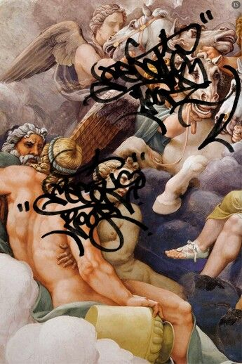

Молитвы для
первокурсников
Все самые нужные для первокурсника молитвы
(ты можешь добавить еще свою)
Читать
Вера=сила
Это всего лишь мем, но если сильно в
него верить, тогда у тебя все получится.
Потому что молитвы обладают сильными свойствами.

Молитвы
У каждой молитвы для
первокурсника есть своё
значение и применение.
Они все относятся
к какому-нибудь виду
молитв.